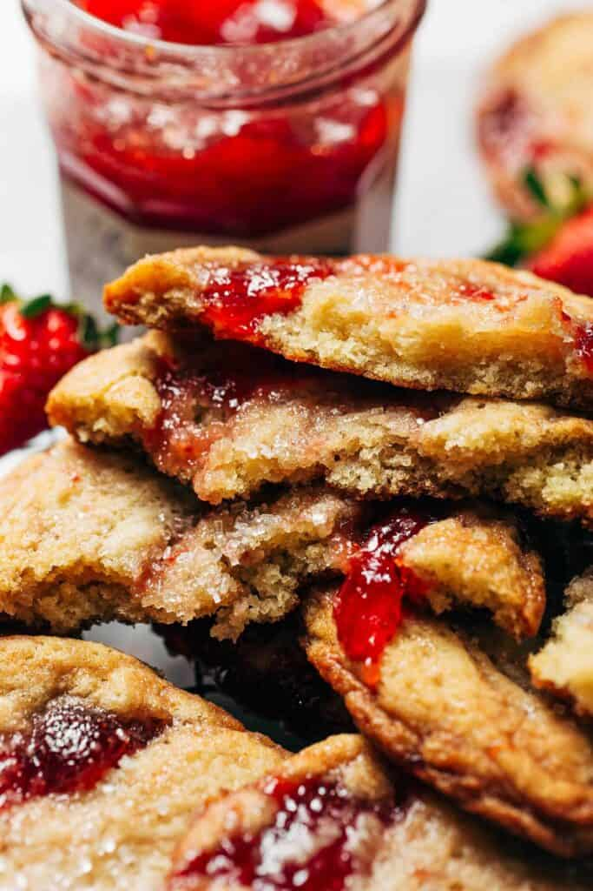

Strawberry Jam Sugar Cookies

Description
These delicious strawberry jam sugar cookies are the perfect sweet and fruity treat!
It's a soft and buttery sugar cookie with swirls of strawberry jam mixed in to create
a melts-in-your-mouth dessert.
Ingredients
- 2 1/2 cups (330g) all-purpose flour
- 3/4 tsp baking soda
- 3/4 tsp kosher salt
- 1 cup (225 g) unsalted butter, melted and cooled
- 1 cup + 2 tbsp (225 g) granulated sugar
- 1 large egg + 1 egg yolk
- 2 tsp vanilla extract
- 1/2 heaping cup strawberry preserves, chilled overnight
Steps
- In a medium bowl, whisk together the flour, baking soda, and salt. Set
aside.
- In a large mixing bowl, whisk together the melted butter and sugar. It
will be very liquid.
- Then vigorously whisk in the egg and egg yolk (about 1 minute of whisking)
followed by the vanilla.
- Switch to a rubber spatula and dump in the dry ingredients. Gently mix
and fold the dough to fully combine.
- When the dough is smooth and combined, plop in spoonfuls of preserves
throughout the bowl of dough.
- Using the rubber spatula, gently fold the dough 3-4 times max. Fold just
enough to disperse ribbons of strawberry throughout the dough but not too
much to where the preserves fully mix in.
- With a large 2 oz cookie scoop (aka ice cream scoop), scoop up the dough
in one swift motion and plop onto a plate or small pan lined with parchment
paper. When scooping, pay attention to where the jam is at. Try to include
most of the jam at the bottom of the scoop so that when it's turned out,
you're left with a thick ribbon of jam on top of each cookie dough ball.
- Then place the uncovered dough in the refrigerator to chill for at least
4 hours or overnight.
- To bake, preheat the oven to 350F.
- Line a large baking sheet with parchment paper and place 3-4 cookie dough
balls well spaced apart.
- Bake for 14-16 minutes, or until the edges are golden and the center looks
puffed but slightly underdone.
- Allow the cookies to cool on the pan for a minute or two, then transfer
to a cooling rack.
- The cookies are best when they're just slightly warm, so cool as
needed and enjoy!